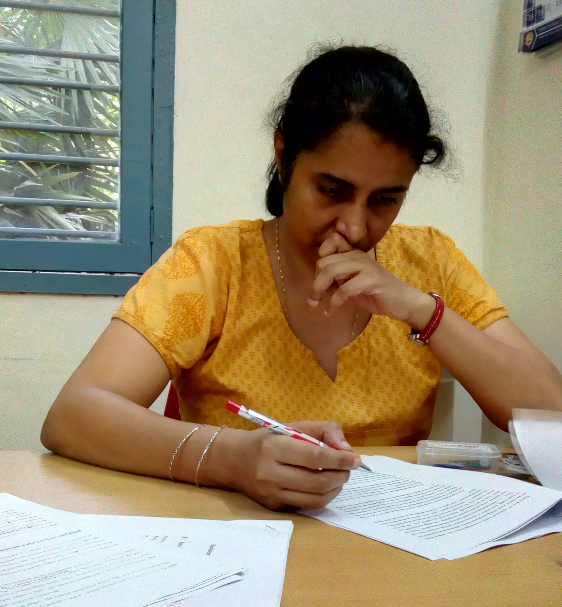

R. Aditi Simha (1972 - 2018)
Aditi Simha was born on 28 December 1972 as the second child of Prof. Roddam Narasimha and Dr. Neelima Narasimha. She completed her schooling at the Kendriya Vidyalaya in the Indian Institute of Science, Bengaluru, and later, graduated in Physics from St. Joseph's college under Bangalore University. She joined the integrated Ph.D program at the Department of Physics, Indian Institute of Science in 1995 and completed her Ph.D in 2003. During her Ph.D, she did outstanding and well-cited work on the physics of active matter, under the mentorship of Prof. Sriram Ramaswamy. After her Ph.D, Aditi joined the Max Planck Institute for Physics of Complex Systems, Dresden, Germany, where she did post-doctoral research in the group of Prof. Frank Julicher. In 2005, she moved to the University of Leeds, U.K, where she spent two years in the group of Prof. Mike Evans, engaged in research in non-equilibrium statistical physics. Aditi joined the Department of Physics, IIT Madras as Assistant Professor in 2008. An insightful and gifted physicist, Aditi was also known for her caring, helpful and compassionate attitude towards students and colleagues alike. She died on 5 December, 2018.
|
 |